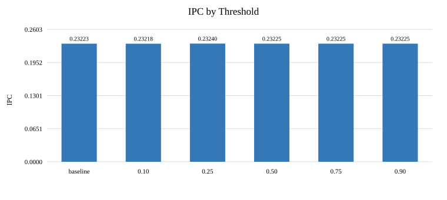
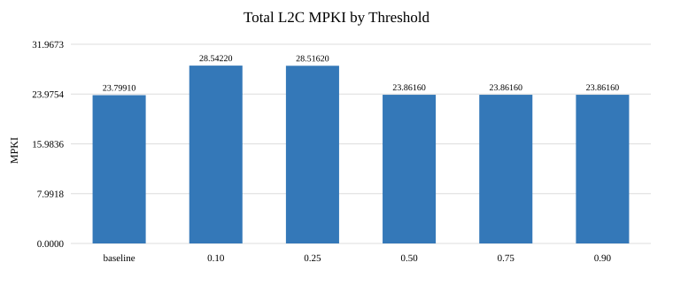

Trace1.gz; single-core ChampSim; 25 million warmup and 25 million simulation instructions.
| Threshold | IPC | Speedup | Total MPKI | Data-load MPKI | Instruction-load MPKI | Follower policy |
|---|---|---|---|---|---|---|
| baseline | 0.232232 | 1.000000x | 23.7991 | 7.06972 | 10.5255 | SRRIP |
| 0.10 | 0.232178 | 0.999767x | 28.5422 | 8.67768 | 9.66028 | I-RRIP |
| 0.25 | 0.232396 | 1.000706x | 28.5162 | 8.65824 | 9.6566 | I-RRIP |
| 0.50 | 0.232250 | 1.000078x | 23.8616 | 7.09548 | 10.5098 | RRIP |
| 0.75 | 0.232250 | 1.000078x | 23.8616 | 7.09548 | 10.5098 | RRIP |
| 0.90 | 0.232250 | 1.000078x | 23.8616 | 7.09548 | 10.5098 | RRIP |


Baseline SRRIP IPC is 0.232232. Threshold 0.25 has IPC 0.232396, but total L2C MPKI rises from 23.7991 to 28.5162. Instruction-load MPKI falls while data-load MPKI rises, indicating a trade-off rather than a substantial overall performance improvement.
Thresholds 0.50, 0.75 and 0.90 have identical measured results and finish with RRIP as the follower policy. Thresholds 0.10 and 0.25 finish with I-RRIP. Only Trace1 was available for this sweep, so results should not be generalized to other workloads.